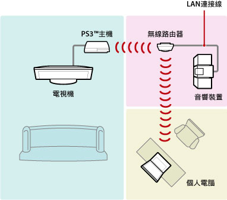
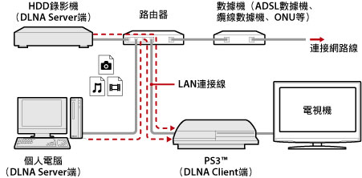
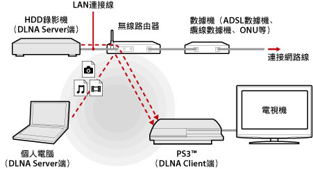
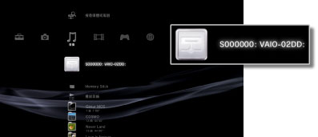
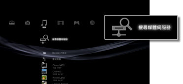

媒體伺服器連線
可調整與支援DLNA之裝置間的連線相關設定。
| 有效 | 啟用與DLNA伺服器間的連線。 |
|---|---|
| 無效 | 停用與DLNA伺服器間的連線。 |
關於DLNA
DLNA（Digital Living Network Alliance）是經由網路連接個人電腦、HDD錄影機、電視機等數碼（數位）裝置，並能彼此利用其他裝置中資料的架構。
DLNA兼容裝置分為傳送圖像、音樂、影像檔案等資料的Server端，以及接收資料的Client端2種。部分裝置兼具這兩種機能。將PS3™當Client端使用時，可經由網路使用PS3™播放保存於具備DLNA Server機能的個人電腦、HDD錄影機的圖像、音樂、影像檔案等資料。

連接PS3™和DLNA伺服器
可選擇有線或無線連接PS3™和DLNA伺服器。
與個人電腦有線連接的範例

與個人電腦無線連接的範例

設定DLNA媒體伺服器
調整能在PS3™利用DLNA伺服器的設定。DLNA裝置共有以下數種。
- 包含其他公司產品，支援DLNA標準的裝置。
- 已安裝Windows Media Player 11的個人電腦。
使用AV機器當作DLNA媒體伺服器時
啟用已連接之裝置的DLNA伺服器機能，即會公開內容。設定方法因連接之裝置而異。詳細請參閱您連接之機器隨附的使用說明書。
使用安裝Microsoft Windows的個人電腦當作DLNA媒體伺服器時
使用Windows Media Player 11的機能，即能使用安裝Microsoft Windows的個人電腦成為DLNA媒體伺服器。
1. |
啟動Windows Media Player 11。 |
|---|---|
2. |
選擇［媒體櫃］選單中的［媒體共用］。 |
3. |
選取［共用我的媒體至］。 |
4. |
從［共用我的媒體至］的裝置清單中，選取您要共用資料的裝置，並選擇［允許］。 |
5. |
選擇［確定］。 |
提示
- 安裝Microsoft Windows XP的個人電腦並未內建安裝Windows Media Player 11。請前往微軟的官方網站，取得下載程式並執行安裝。
- Windows Media Player 11的詳細使用方法，請參閱Windows Media Player 11的輔助說明。
- 部分電腦可能已安裝獨自的DLNA伺服器軟件（軟體）。詳細請參閱您使用之電腦的使用說明書。
播放DLNA伺服器的內容
啟動PS3™電源後，會自動搜尋位於相同網路內的DLNA伺服器，並於 （相片）／
（相片）／ （音樂）／
（音樂）／ （影像）類別中顯示伺服器圖示。
（影像）類別中顯示伺服器圖示。
1. |
從  |
|---|---|
2. |
選擇想播放的檔案。 |
提示
- PS3™須與網路維持連線。網路設定的詳細內容，請參閱
 （設定）＞
（設定）＞ （網路設定）＞［網路連線設定］。
（網路設定）＞［網路連線設定］。 - IP位址的分配因您使用的網路而從AutoIP更改為DHCP時，請選擇
 （搜尋媒體伺服器）再度搜尋DLNA伺服器。
（搜尋媒體伺服器）再度搜尋DLNA伺服器。 - DLNA伺服器的圖示僅能於（設定）＞（網路設定）＞［媒體伺服器連線］設定為有效時顯示。
- 顯示的資料夾名稱可能因DLNA伺服器而異。
- 部分檔案可能因DLNA伺服器種類的限制，而無法正確播放，或播放時的操作受限。
- 無法播放內建著作權保護機能的內容。
- 未依據DLNA標準之伺服器保存的資料，可能會於檔案名稱上標示［＊］記號。此類檔案可能無法在PS3™上播放。此外，PS3™可播放的檔案並不代表即能在其他裝置上播放。
- CECH-4200系列以後的主機，若要播放影像內容，需連接HDMI連接線。
手動搜尋DLNA伺服器
可再度搜尋位於相同網路內的DLNA伺服器。啟動PS3™電源，且未發現任何DLNA伺服器時可選擇此項目。
從（相片）／（音樂）／（影像）類別中選擇（搜尋媒體伺服器）。此後會顯示搜尋結果，回到XMB™後並會顯示可連線之DLNA伺服器的清單。

提示
（搜尋媒體伺服器）僅能於（設定）＞［網路設定］＞［媒體伺服器連線］設定為有效時顯示。